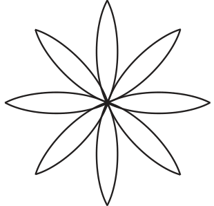
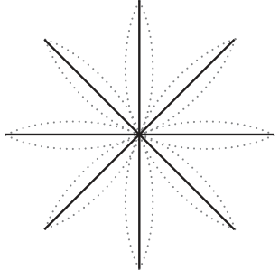
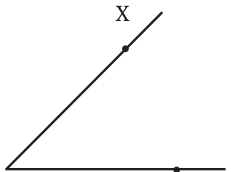
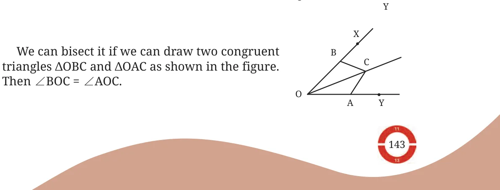
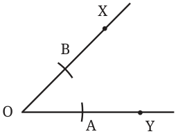
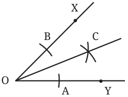

How do we construct this figure?

The supporting lines for this figure will look like this.
What is the angle between two adjacent lines? We need the angle between every pair of adjacent lines to be equal. Since \(360 ^{\circ}\) is equally divided into 8 parts, every angle is \(45 ^{\circ}\) . How do we construct \(a 45 ^{\circ}\) angle using only a ruler and a compass? We know how to construct \(a 90 ^{\circ}\) angle. If we can divide it into two equal parts, or bisect it, then we get \(a 45 ^{\circ}\) angle.

We will now develop a general method to bisect any angle. Consider an angle \(\angle XOY\).

How do we construct these congruent triangles, given the angle? If A and B are marked such that \(OA = OB\), and if C is chosen such that \(BC = AC\), then by the SSS congruence condition, ΔOBC ΔOAC. So we can bisect an angle as follows. \(\cong\)
Steps for Angle Bisection

- 1.Mark points A and B such that \(OA = OB\).
- 2.Choosing any sufficiently long radius, cut

arcs from A and B, keeping the radius same. Mark the point of intersection as C.
- 3.OC bisects \(\angle AOB\).
So, \(a 45 ^{\circ}\) angle can be constructed by first constructing \(a 90 ^{\circ}\) angle and then bisecting it.